Desarrolla moldes base, transformaciones y escalado para crear prendas bien estructuradas y con ajuste profesional.
Este curso está dirigido a quienes desean dominar el patronaje en tela plana y de punto, transformando sus ideas en moldes precisos listos para confeccionar.
👉 No necesitas ser experto: aprenderás paso a paso desde toma de medidas hasta transformación y escalado.
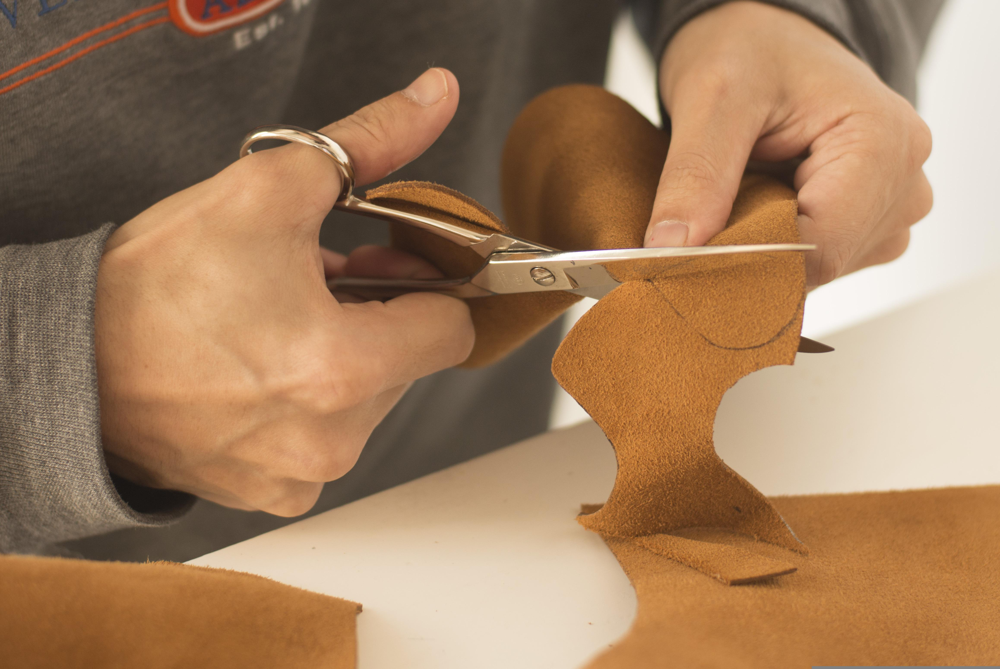
En este curso aprenderás a construir prendas completas desde el molde base.
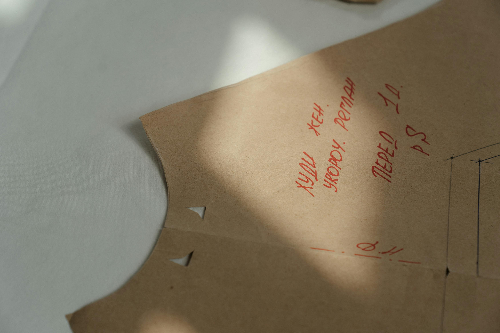
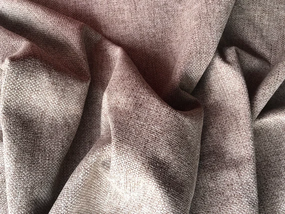
Cada bloque incluye un carrusel de referencia (sin imágenes por ahora) y el detalle desplegable del temario.
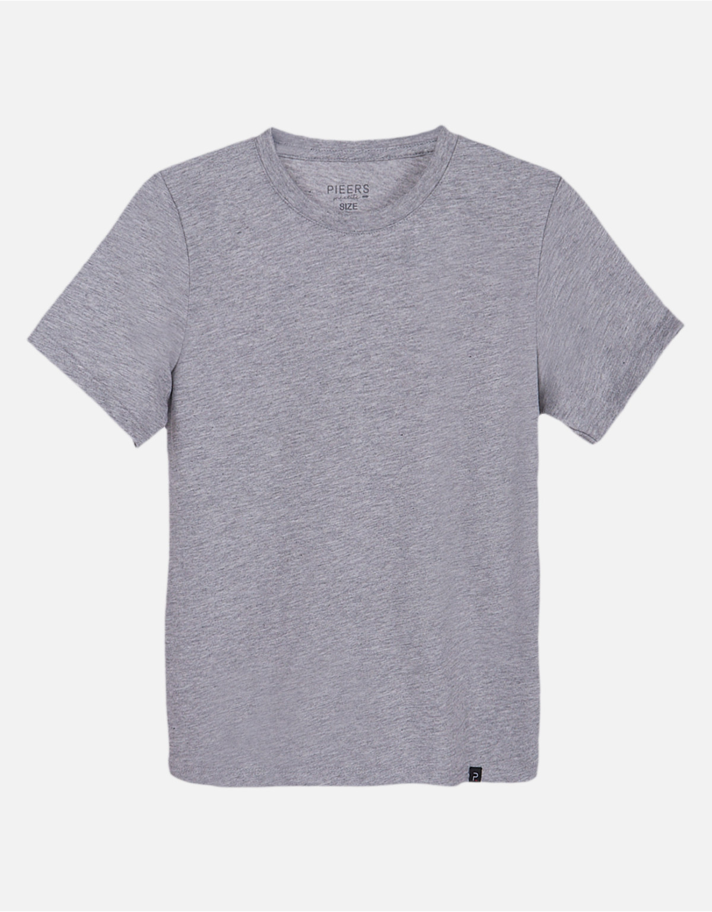
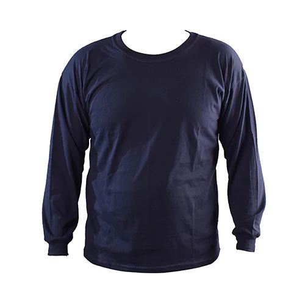
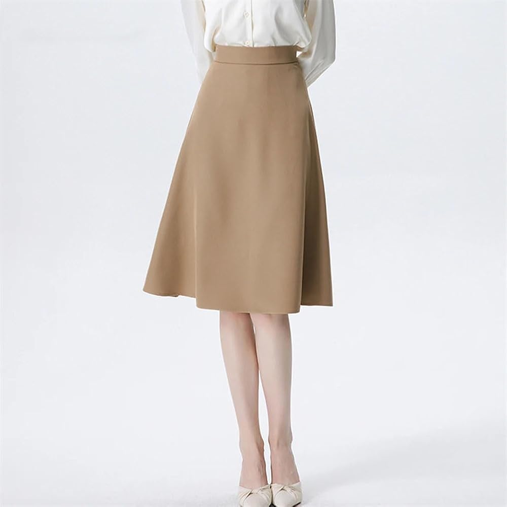
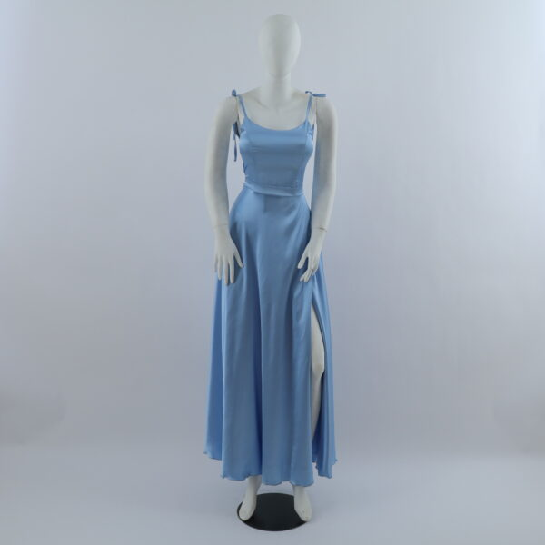
¿Qué es patronaje? Es la técnica para construir moldes y dar forma correcta a cada prenda.
¿Veré escalado de tallas? Sí, trabajamos moldes base, transformaciones y escalado.
¿Me sirve para emprender? Sí, te da una base sólida para confección a medida o producción.
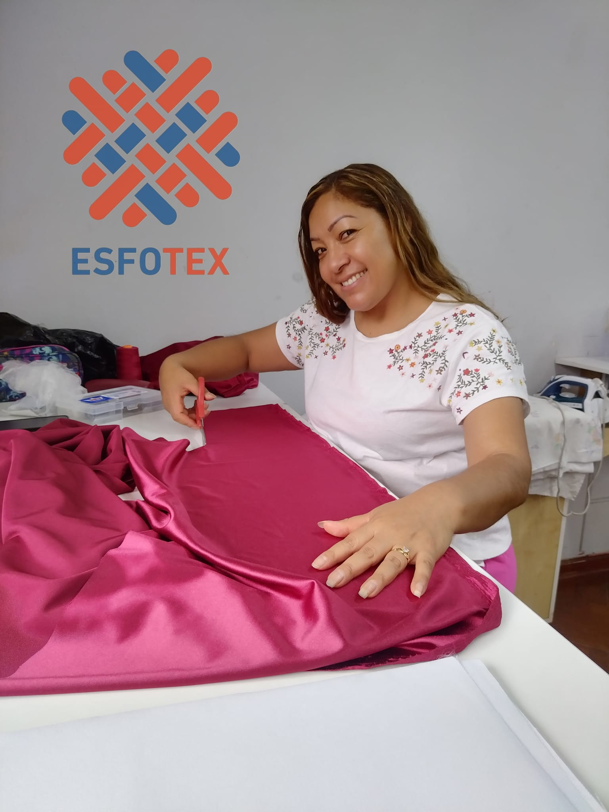
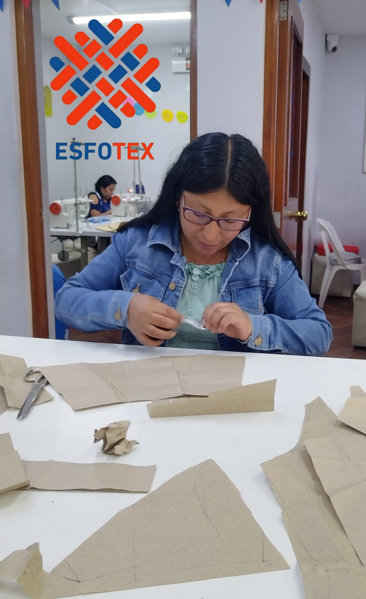
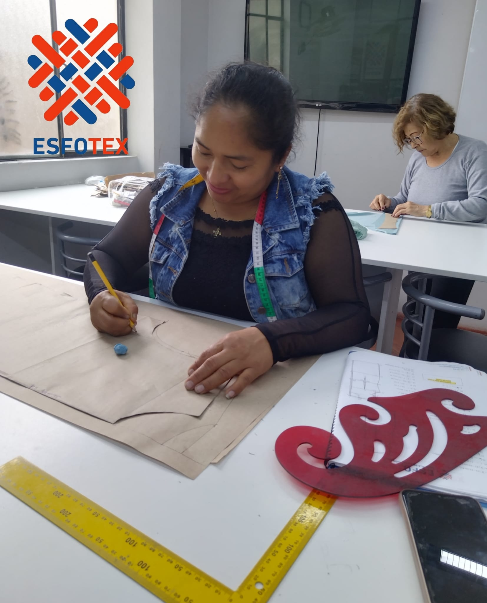
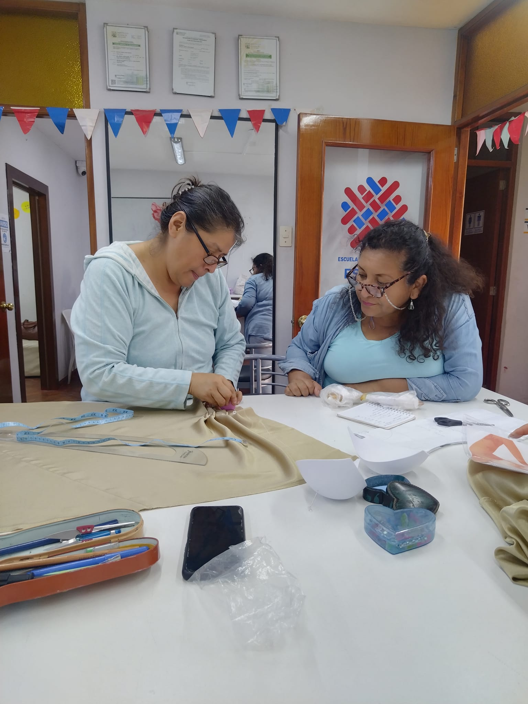